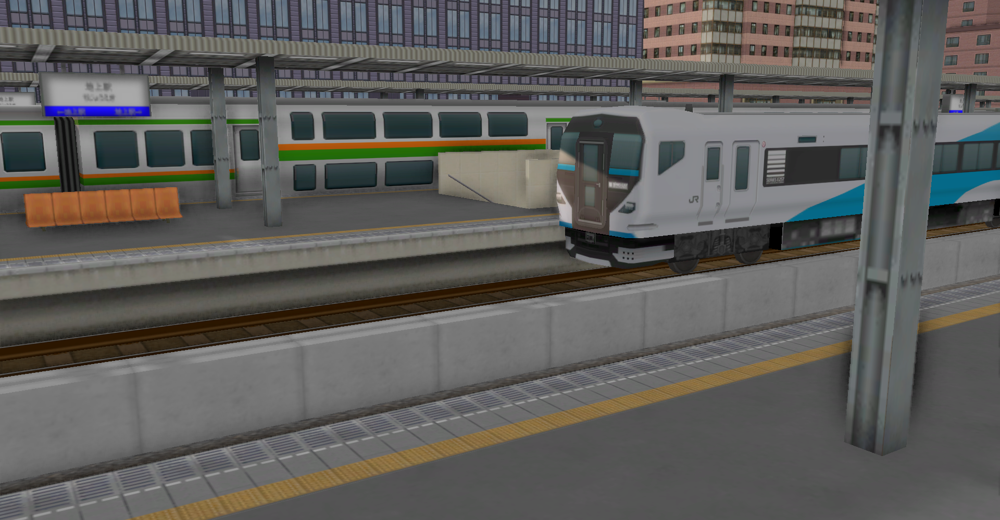
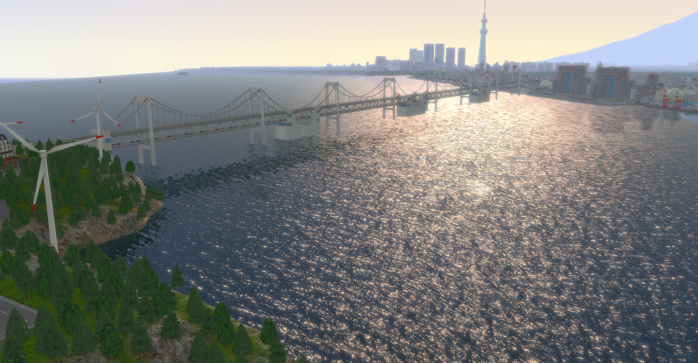
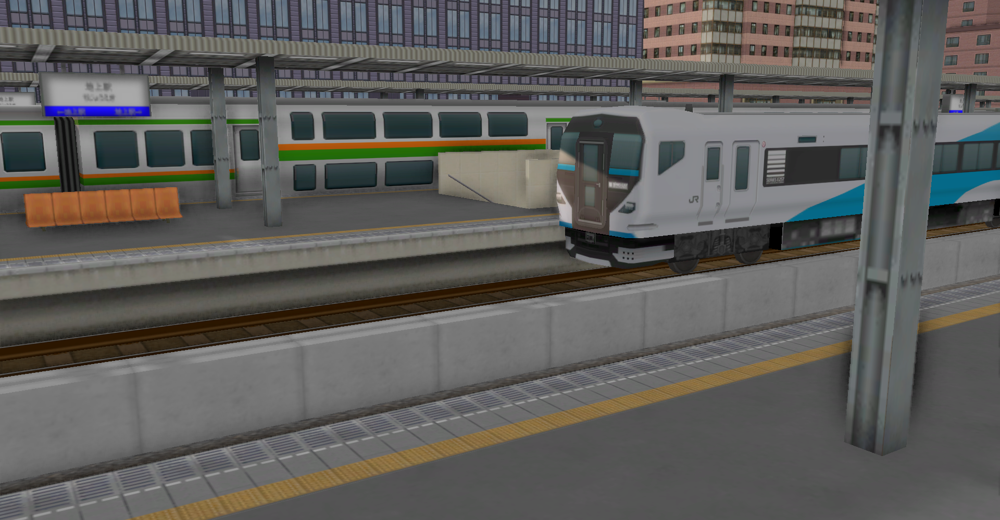
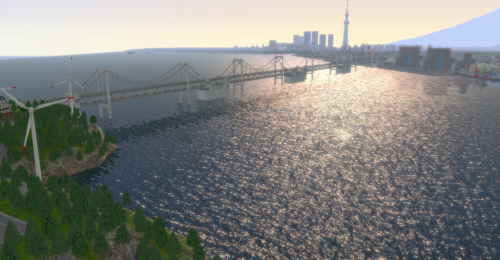

Information
A列車でいこう9で作成中のマップファイルを公開します．
- 首都圏のJR交通網をリスペクト．（通勤五方面作戦に基づいた近郊路線の複々線化）
- 都市部には地下鉄路線
- 深夜帯には旅客列車は車庫へ留置させ，貨物列車を走らせる
- 郊外，地方の過度な発展は避ける
- 起伏をつくり，リアルな景観を目指す
Gallery


A列車でいこう9で作成中のマップファイルを公開します．

